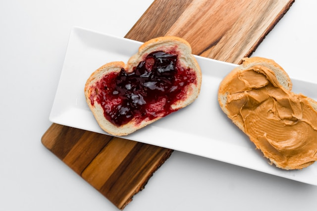

PB&J Recipe
Back to Homepage

Photo by Freddy
G on Unsplash
Peanut butter and Jelly
This is a pretty easy recipe to remember.
This may be the easiest bit of food you will ever make.
Ingredients
- Peanut butter of your choice
- Jelly of your choice
- Bread of your choice
Steps
- Spread peanut butter evenly on one piece of bread
- Spread jelly evenly on one piece of bread
- Put the peanut butter and the jelly side together
- Enjoy your sandwich